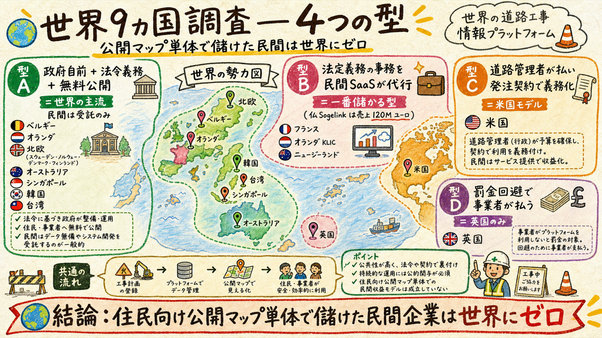
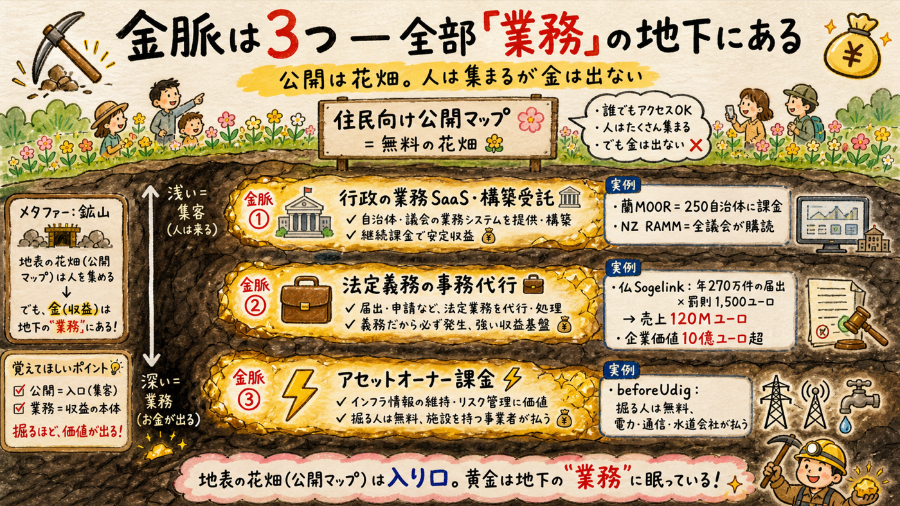
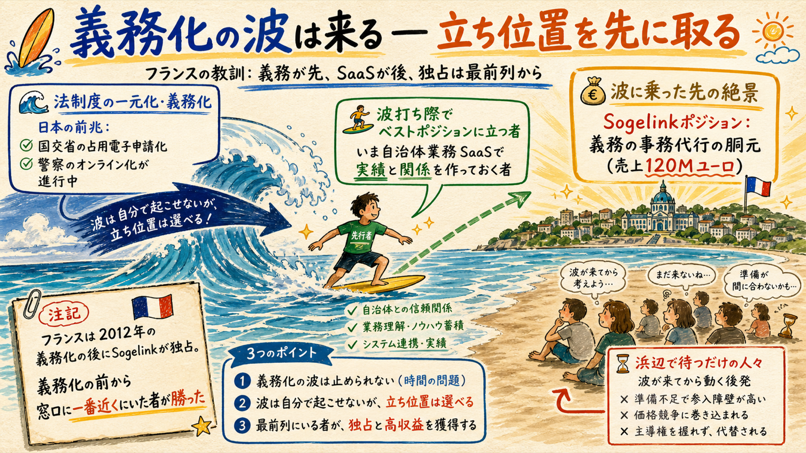
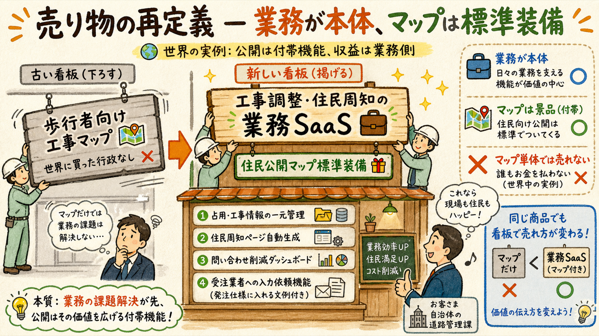

米英に続き、ベルギー・オランダ・フランス・ドイツ・北欧・NZ・豪州・シンガポール・韓国・台湾の同型サービスを調査した。世界共通の発見が1つ: 住民向け公開マップ「単体」で収益化している民間企業は、調査した全地域に存在しない。一方で、この領域で実際に大きく儲けている企業も特定できた — 金脈は例外なく「公開」ではなく「業務」の側にあった。
9カ国・地域を「誰が払うか」で分類した

| 型 | 国・実例 | 誰が払う | 民間の稼ぎ場 |
|---|---|---|---|
| A 政府自前＋法令義務＋無料公開 | ベルギー（フランダースGIPOD・ブリュッセルOsiris）、オランダMelvin、スウェーデン・デンマーク・ノルウェー、豪NSW/VIC、シンガポールLTA、ソウル、台北 | 政府予算（住民・事業者は原則無料） | 構築・運用受託、申請代行のみ |
| B 法定義務→民間SaaSが事務代行 | 仏Sogelink（DT-DICT）、蘭KLIC周辺、独infrest、NZ Submitica/RAMM | 工事会社とインフラ事業者の双方向、または道路管理者 | 義務が生む事務負担の肩代わり — 最も大きく儲かる |
| C 道路管理者1社課金＋発注契約で義務化 | 米国（フロリダ・テキサス・ユタ等 one.network） | 州DOT | 調整・配信SaaS |
| D 法定罰金の回避で事業者が自発課金 | 英国のみ（S74超過課金・車線レンタル） | ユーティリティ・施工者 | 調整SaaS（日本移植不能・検証済み） |
世界共通の結論: 住民向け公開マップは、全地域で「政府の無料サービス」か「業務SaaSの付帯機能」だった。法定義務がある国（仏）ですら、Sogelinkの住民向け地図は無料の付帯機能で、収益源は自治体・事業者の業務側にある。「住民は無料」は選択ではなく世界共通の必然 — 3階建てモデルの1Fは正しかった。
主要な事実だけ抜粋（全出典は脚注）
公開は花畑。人は集まるが、金は出ない

| 金脈 | 実例と規模 | 日本での再現性 |
|---|---|---|
| ① 行政の業務SaaS・受託 | 蘭MOOR（250自治体に課金）、NZ RAMM（全議会購読）、Osiris構築のNSI | 高 — 義務不要で成立している唯一の型。日本の自治体SaaS商習慣（LoGo 800自治体）とも整合 |
| ② 法定義務の事務代行 | 仏Sogelink €120M、蘭KLIC再販層、独infrest（照会650万件超） | 低→将来高 — 日本に義務・一元窓口が無いため今は不成立。義務化されたら最大の金脈 |
| ③ アセットオーナー課金 | beforeUdig/PelicanCorp（掘る人無料、インフラ企業が払う） | 中 — 日本の埋設照会は各社バラバラで、一元化の担い手が不在。単独参入は重い |
波は自分で起こせない。だが立ち位置は選べる

Sogelinkの€10億は「法定義務が生む事務コスト」の上に建っている。義務が先、SaaSが後 — この順番は変えられない。そして日本にも波の前兆はある: 国交省の道路占用電子申請（直轄国道・GビズID対応）、警察の道路使用許可オンライン化（2025年12月開始・工事新規は未対応）、xROADの工事規制情報API構想。これらが「一元化・義務化」に育った瞬間、その事務代行レイヤーが日本のSogelinkポジションになる。
あなたの取るべき立ち位置: いま自治体の工事調整・周知業務のSaaSで実績と関係を作っておくこと自体が、将来の波の最前列を取る行為になる。前回「xROADは3〜5年軸の公共代替リスク」と評価したが、世界の実例を踏まえるとむしろ逆で、国の一元化はSogelinkポジションが生まれる合図。監視対象から「待ち構える波」に格上げする。
マップは景品。業務が本体

| 項目 | これまで | 世界調査後 |
|---|---|---|
| 商品定義 | 歩行者向け工事情報マップ（B2Gで自治体に採用してもらう） | 自治体の工事調整・占用・住民周知の業務SaaS。住民向け公開マップは標準装備の成果物（MOOR型＋米国型ハイブリッド） |
| 営業の一言目 | 「住民に工事情報を見せませんか」 | 「道路管理課の工事調整と住民対応の手間を減らします。住民向け公開ページは自動で付いてきます」 |
| xROAD・国の動き | 公共代替リスク（3〜5年軸で監視） | Sogelinkポジションが生まれる波。前兆（占用電子化・警察オンライン化）の進捗をAIが定点監視し、一元化の動きが出たら即、事務代行レイヤーに参入 |
| 規模の期待値 | 全国SAM 年10億弱 [推定] | 義務なしの間はMOOR級（自治体SaaS・数億円）が上限。義務化の波が来ればSogelink級の桁が開く — ただしそれは自分で起こせない外生イベントとして扱う |
変わらないもの: 7/27提出が起点であること、G0〜G3の関所、並行2レーン、週2〜4時間の対人行動。今回の調査は「何を売るか」の言葉を変えただけで、「誰に会うか・いつ動くか」は1ミリも変わらない。